Memory Augmentation Unlocks Efficient Chain-of-Thought Reasoning / 记忆增强解锁高效链式思维推理
《Memory Augmentation Unlocks Efficient Chain-of-Thought Reasoning》研究如何在压缩 Chain-of-Thought（CoT）的同时保住复杂推理所需的信息。作者为 Simeng Zhang、Yilong Chen、Wenyuan Zhang、Zhenyu Zhang、Yao Chen、Junyuan Shang 与 Tingwen Liu；第一作者主要机构是中国科学院信息工程研究所与中国科学院大学，合作机构包括百度和腾讯。论文于 2026-08-21 提交至 arXiv，入口为 arXiv:2608.21265。本轮未核验到独立公开代码或项目页；论文附录称匿名代码包随补充材料提供，并计划在发表时以 MIT License 公开，因此当前不能把“计划开源”写成“代码已经公开”。
长链式思维虽然能支撑复杂推理，却必须逐 token 串行生成；而激进压缩又会删除子目标、约束与逻辑依赖。核心问题是：能否借助输入上下文的并行 prefill，把一部分原本需要在 decode 阶段重新生成的推理支撑提前提供，从而在短推理链下保持准确率？
1. 背景和问题
1.1 为什么压缩会发生 reasoning collapse
标准 CoT 把“求解所需的中间状态”外显为一串自回归 token。它的好处是模型可以逐步建立子目标、保留约束并执行关键操作；代价则是每一步都依赖前一步，无法像 prefill 那样大规模并行。对长思维模型而言，中间推理可能远长于最终答案，因此真正拖慢服务的往往不是输出那几个答案 token，而是此前数百乃至数千个 reasoning token。推测解码、KV cache 管理和稀疏化可以让既定输出生成得更便宜，却没有改变“仍需把整条思维链生成出来”这一事实。
现有 CoT 压缩从多个层级动手：Chain-of-Draft（CoD）用提示词要求每个思维步骤至多保留少量词；TokenSkip 直接控制 token 级压缩比例；Extra-CoT 学习极高压缩率的推理轨迹；Reasoning Path Compression（RPC）则压缩推理状态或路径。共同风险是，生成长度不是可以无损删除的冗余量。短链若恰好删掉“先算总数、再算部分、最后做差”中的最后一步，表面上仍有合理计算，最终答案却会把中间量误当结果。论文把这种在激进压缩下突然掉点的现象称为 compression collapse：准确率下降并非只因为语言不够完整，而是求解所需的结构支撑已经丢失。
这也解释了为何“让模型写得更短”不能自动等价于“让推理更高效”。纯生成侧压缩同时改变了两个变量：它减少 decode token，也减少可供后续步骤读取的工作记忆。若只报告 token 变少而不观察准确率、prefill、decode 和端到端时延，便可能把一次逻辑能力损失包装成效率提升。本文的研究价值在于把问题从“怎样继续删 token”改写为“被删掉的推理支撑能否从另一条计算路径补回来”。
1.2 把 decode 支撑迁到 prefill 的问题重写
Transformer 对输入上下文的处理发生在 prefill 阶段，同一层内能并行处理多个 token；自回归 decode 则必须逐 token 推进。论文因此提出一个硬件与算法共同决定的交换：若提前注入少量、相关、可复用的 reasoning memory，增加的输入 token 虽会提高 prefill 成本，却可能使模型在更短的输出链上仍保持正确。这里的 memory 不是把相似题目的完整答案原样贴进 prompt，而是抽取问题类型、关键约束、子目标、求解策略和关键操作，让新问题获得一个“应该保住哪些步骤”的支架。
这个重写有三层边界。第一，memory 必须相关；随机或噪声记忆会制造干扰。第二，memory 不是免费上下文；过大的 top-k 会增加输入成本并引入冗余。第三，模型仍要独立解决当前问题；外部支架不能完全替代模型内部的推理能力，尤其在 MATH 这类难题和极端压缩设置下。因此本文不是证明“上下文总能取代生成”，而是提出一个有条件的 substitution：只有当额外 prefill 的边际成本低于被省去的 decode 成本，并且 memory 足以补偿压缩损失时，交换才成立。
论文的主要贡献据此分成三部分：形式化 Context-Generation Substitution Law；提出无需更新 backbone 参数的 Memory-Augmented Compression（MAC）；在数学、复杂推理、科学问答、多种模型和压缩器上检查准确率、token 与时延的联合变化。对大模型系统而言，它把 RAG/记忆机制从“补知识”扩展为“补计算过程”；对推荐、搜索和广告链路而言，也提供了一个可迁移视角：将可复用决策模式放入并行可处理的上下文，减少在线串行生成，但必须把检索成本、噪声和服务批量一起纳入账本。
2. 方法
2.1 从标准 CoT 到 Context-Generation Substitution Law
论文先把标准 CoT 写成“生成推理链，再基于推理链给答案”的概率分解。这个起点把 reasoning 与 answering 分成两个条件阶段，便于追踪压缩究竟减少了计算，还是同时破坏了后续答案所依赖的信息；也避免把短输出天然等同于等价推理，而非只看长度：
符号解释：$x=(I,q)$ 是指令与问题，$z$ 是中间推理，$y$ 是答案，$M_\theta$ 是语言模型；两项分别对应 reasoning 与 answering phase。压缩 $z$ 也改变答案所依赖的条件。为补回这部分条件，MAC 从历史 memory source $C$ 检索：
符号解释：$C$ 是历史已解样本库，$\phi$ 是 tag generation、embedding、top-k retrieval 与 serialization 组成的非训练流程，$M$ 是当前问题的结构化 memory。作者希望 $M$ 承担一部分长 $z$ 的条件支撑：
符号解释：左侧是显式 memory 条件下回答，右侧是长 CoT 条件下回答；近似号只要求性能接近。模型仍生成短链 $z'$，memory 让 $|z'|\ll|z|$ 时保留关键支撑。联合目标为：
符号解释：$|z'|$、$|M|$ 是短链和 memory 长度，$\mathcal{L}_{\mathrm{perf}}$ 是性能惩罚，$\lambda$ 控制其权重，$\gamma=\tau_{\mathrm{pre}}/\tau_{\mathrm{dec}}$ 换算 prefill/decode 成本。目标不是最小化总 token，而是联合约束串行生成、输入扩张与性能损失。
2.2 三类记忆与计算不对称
论文用认知记忆类比拆出三种信息载体。隐式记忆是模型权重中的知识与推理能力，调用它需要一次真实 inference；显式记忆是系统指令、检索内容、few-shot example 等输入上下文，主要在 prefill 中处理；工作记忆是正在生成的 CoT 及其 KV cache，由自回归 decode 逐步构造。标准 CoT 相当于不断把隐式能力外显到昂贵的工作记忆，MAC 则尝试把可复用部分提前放入显式记忆。论文用一阶时延模型说明这种转移：
符号解释：$T$ 是模型时延，$|x|$、$|z|$ 是输入与生成长度，$\tau_{\mathrm{pre}}$、$\tau_{\mathrm{dec}}$ 是单位 token 耗时。该式排除检索，只算 memory 取回后的模型计算。若输入增加 $\Delta_{\mathrm{in}}$、生成减少 $\Delta_{\mathrm{out}}$，净收益条件为：
符号解释：左侧是 decoding gain，右侧是 memory prefill cost；收益可以来自直接缩短 $z'$，也可以来自恢复短链准确率、避免退回长 CoT。整理为交换比：
符号解释：左侧是每个 memory token 替代的 decode token，右侧是硬件单位成本比。H20 上一个 decode token 相当于 14.7-87.0 个 prefill token；batch 增大后差距缩窄，因此该比值不是跨硬件常数。
2.3 Memory-Augmented Compression 四组件
框架由 memory bank、memory retrieval、memory-augmented prefill 与 memory-guided compressed inference 四个组件组成。历史样本先生成或收集完整且正确的 reasoning trace，再抽取为 Long-CoT、Short-CoT 或 Summary 等 memory 内容；新 query 到来时，retriever 按 reasoning tag 与语义相似度选 top-k：
符号解释：$B$ 是固定 memory bank，$x$ 是当前问题，$k$ 是取回数量，$\mathcal{R}$ 是 retrieval 过程，$M_x$ 是按分数排序的 memory 集。输入是 query 与离线 bank，输出不是答案，而是供后续 prefill 使用的 reasoning scaffold。
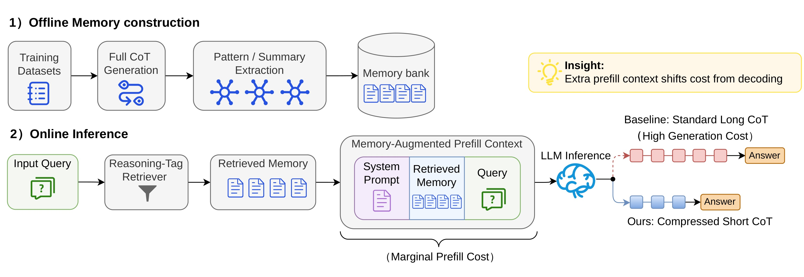
Figure 2 把训练外的离线准备与真实在线请求明确分开。上半部分从训练数据生成完整 CoT，抽取 pattern/summary 后建立 memory bank；这一步可以一次完成并复用，不进入每次 query 的时延。下半部分中，query 先经 reasoning-tag retriever 找到相关 memory，然后把 system prompt、retrieved memory 与 query 组成一个新的 prefill context。LLM 面前出现两条路径：标准长 CoT 依赖更多红色串行 decode block，MAC 则用额外输入支撑更短的蓝色 reasoning block。图中括号专门标出 marginal prefill cost，说明作者没有把 memory 当成免费信息。最重要的信息流是：memory 不改模型权重，也不替模型输出答案；它只改变模型开始 decode 前已经可见的结构化支撑。 这使 MAC 可以与 CoD、TokenSkip、RPC 等压缩器组合，但组合后的效果仍取决于压缩器是否保留了利用这些支架的能力。
2.4 离线构建、标签检索与注入细节
附录把框架落实为离线-在线过程。内部 record $e_i=(x_i,y_i,r_i,c_i,t_i,v_i)$ 保存历史问题、答案、已验证 trace、memory content、reasoning tags 与 tag embedding；在线 prompt 只注入序列化后的 $c_i$。离线 Algorithm 2 丢弃答案错误、推理不完整或不可解析的样本，再生成 knowledge domain、solution strategy、problem type/context、complexity 四组标签。GSM8K/MATH 使用过滤后的训练例，BBH 用官方 exemplar，MMLU-Sci 做 80/20 分离，AIME 只用 1983-2022 历史题。evaluation sample 不进入 bank、tag generation 或 retrieval pool，这是防止答案泄漏的关键。
在线阶段只看当前问题生成同 schema 的 query tag，gold answer 与 gold reasoning 均不可见；query embedding $q_x$ 与 memory-side embedding $q_i$ 用余弦相似度打分：
符号解释：$q_x$、$q_i$ 分别是 query 与第 $i$ 条 memory tag 向量，$r_i$ 是归一化相似度；分子是内积，分母消除向量长度影响。top-k 选择与压缩器控制生成相互独立。取回内容按分数排序后组成 $x_{\mathrm{mem}}=[I;\widetilde M_x;x]$，即系统指令、memory、当前问题；backbone 再按压缩器 $A$ 输出 $(z',y)$。MAC 不更新模型参数，但在线 tag generation、embedding、search、prompt composition 与 memory prefill 都存在，所以 training-free 不等于零在线成本。
3. 实验结果
3.1 设置、比较对象与指标
实验覆盖 GSM8K、MATH-500、BBH、MMLU-Sci、AIME 2024，评测规模为 1319、500、495、79、30，memory bank 为 4307、2242、27、317、287。模型包括 Qwen2.5-7B/LLaMA-3.1-8B、Qwen2.5-72B 及三个 API 模型。开放模型运行在 8 张 H20 与 vLLM 0.6.4.post1 上。baseline 是标准 CoT、CoD、TokenSkip、RPC、Extra-CoT；成对设置保持模型、硬件、batch 与生成预算一致。指标含 accuracy、prefill/decode/总 token、模型与端到端时延。AIME 用 pass@8，论文未报告 repeated-seed 置信区间，小样本点数不宜外推为线上稳定增益。
3.2 跨域主结果：准确率恢复与时延权衡
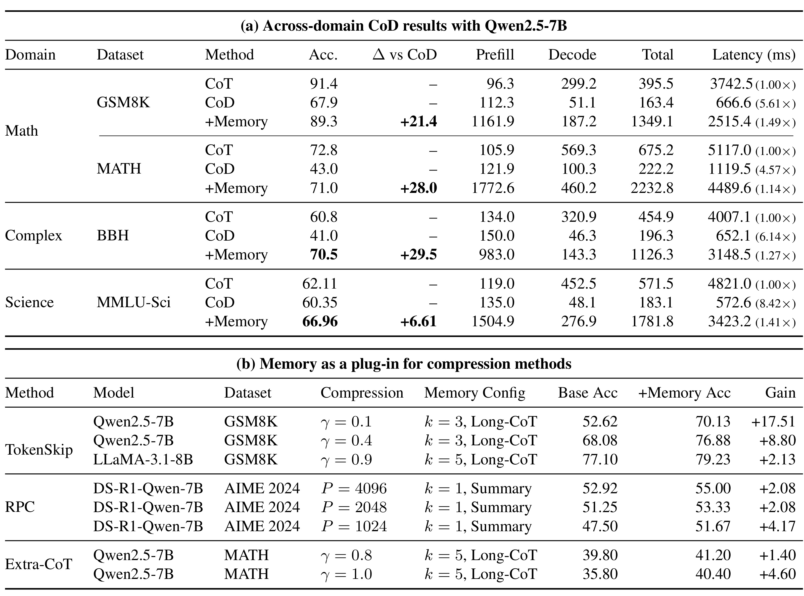
Table 1(a) 必须按两条不同基线来读。相对 prompt-based CoD，+Memory 在 GSM8K、MATH、BBH、MMLU-Sci 上分别提高 21.4、28.0、29.5、6.61 个准确率点：67.9 到 89.3、43.0 到 71.0、41.0 到 70.5、60.35 到 66.96。这四个点数都不是相对标准 CoT，也不是百分比相对涨幅。与标准 CoT 比较时，GSM8K/MATH 仍低 2.1/1.8 点，BBH/MMLU-Sci 则高 9.7/4.85 点。速度列的括号又使用另一口径：以标准 CoT 的 post-retrieval 模型时延为 1.00×，CoD+Memory 在四任务达到 1.49×、1.14×、1.27×、1.41×。因此 fact pack 中的 1.14-1.49× 只能表述为“相对标准 CoT 的模型推理时延加速”，不能说相对 CoD，也不能直接叫完整服务端到端速度。
表中 token 结构揭示了交换的实质：GSM8K 的 CoD+Memory 平均 prefill 从 CoD 的 112.3 增至 1161.9，decode 从 51.1 升至 187.2，并非比 CoD 进一步减少；它相对标准 CoT 的 decode 299.2 仍更短，同时准确率几乎恢复。MATH 也从标准 CoT 的 569.3 decode 降到 460.2，却把 prefill 增至 1772.6。MAC 并不保证比压缩 baseline 少生成 token；它用比 CoD 更充足的短推理和显式输入换回准确率，效率主张依赖于比标准长 CoT 更低的串行时延。Table 1(b) 还显示 TokenSkip、RPC 的多组正增益以及 Extra-CoT 的两个正例，但这只是代表性 setting，附录完整扫描含有负例，不能据此断言任何 compressor 都会受益。
3.3 检索、表示与 memory size 消融
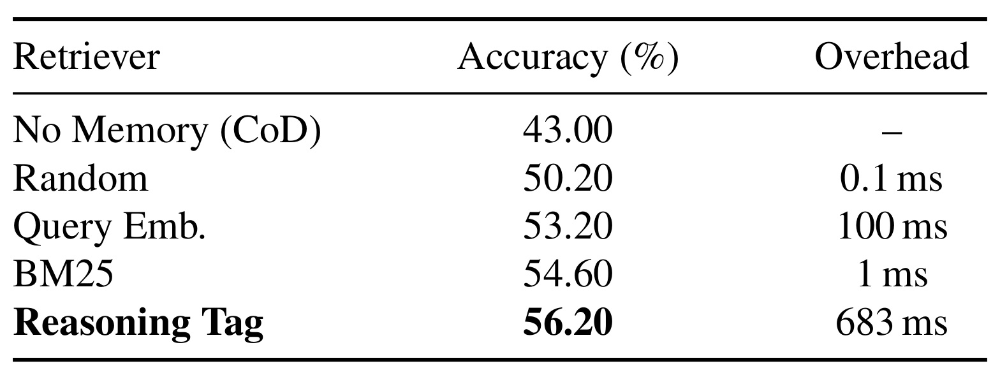
Table 2 在 MATH-500 上把“取到相关 memory”与“多放一些文字”区分开。无 memory 的 CoD 为 43.0；Random 取回升到 50.2，说明即便粗糙 scaffold 也可能提供一些结构；query embedding 为 53.2，但带来约 100 ms；BM25 仅约 1 ms，却达到 54.6；Reasoning Tag 最高为 56.2，但在线 tag generation 使开销达到约 683 ms。这里不存在单一最优 retriever：追求准确率时 tag retrieval 较好，严格延迟预算下 BM25 的性价比更高。更关键的是 683 ms 与后文端到端分解完全对应，说明检索系统真正昂贵的是 query-side semantic processing，而不是向量库 top-k search。
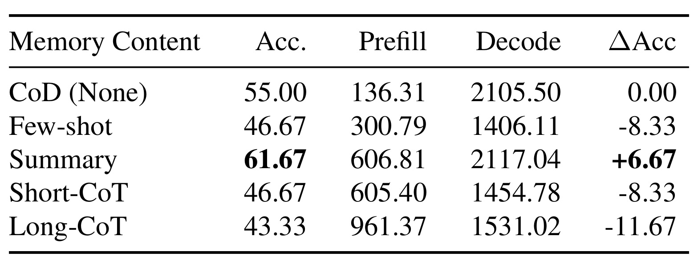
Table 3 使用 DeepSeek-V3.2、AIME 2024、top-k=1 和 2048 最大生成 token 检查注入内容。CoD baseline 为 55.00；固定 few-shot、Short-CoT、Long-CoT 分别降至 46.67、46.67、43.33，而 Summary 提升到 61.67，即相对 CoD +6.67 点。Long-CoT 虽有最丰富的中间步骤，prefill 增到 961.37，却得到最差准确率；Summary 用 606.81 prefill token 获得唯一正收益。这个结果支持的不是“上下文越长越好”，而是“相关、抽象、可迁移的 reasoning structure 才能补偿压缩”。原始 demonstration 可能把模型锁定在不匹配的表面路径，长轨迹也会带入多余细节；Summary 则保留问题类型、约束、子目标和关键操作，更接近可复用支架。
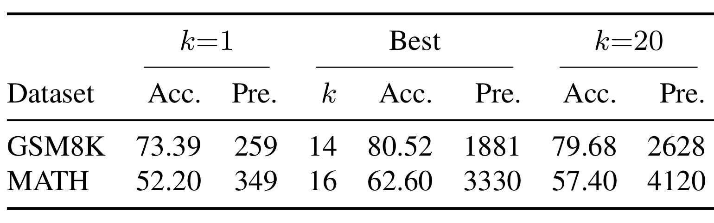
Table 4 展示 $k$ 的非单调效应。GSM8K 从 $k=1$ 的 73.39 提升到最佳 $k=14$ 的 80.52，prefill 同时从 259 增至 1881；继续到 $k=20$，准确率略降到 79.68、prefill 升至 2628。MATH 从 $k=1$ 的 52.20 到最佳 $k=16$ 的 62.60，但 $k=20$ 退至 57.40，prefill 达 4120。难题上的过量注入伤害更明显，说明 top-k 同时控制 coverage、噪声与成本。工程上不能把 $k$ 设为固定的“越大越保险”，应由 query 难度、相似度置信度与 latency budget 联合决定，并对低相关 memory 设置拒绝或截断机制。表中 decode 并未随 $k$ 同比例增长，进一步表明主要新增负担确实落在 prefill；但准确率在高 $k$ 回落，也否定了“只要 prefill 便宜就可以无限扩张 context”的简单推论。
3.4 模型泛化、压缩强度与真实端到端成本
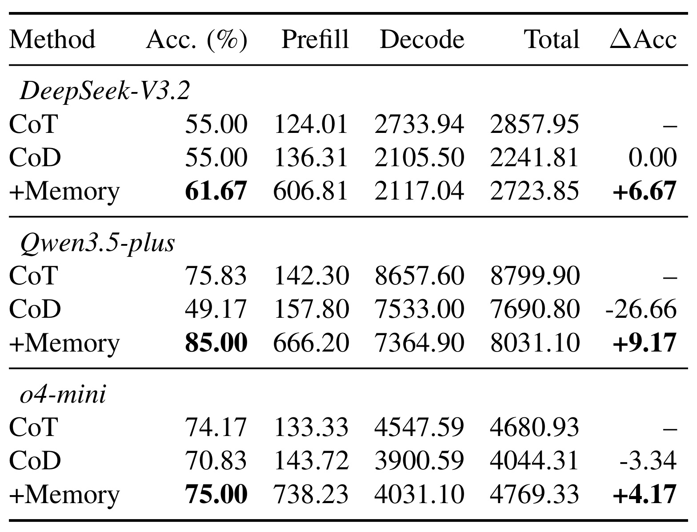
Table 5 说明 MAC 的效果不局限于 7B 开放模型。DeepSeek-V3.2 上 CoD 与标准 CoT 都是 55.00，+Memory 为 61.67；o4-mini 从 CoD 的 70.83 到 75.00。Qwen3.5-plus 的原始值尤其值得谨慎：CoT 为 75.83，CoD 为 49.17，+Memory 为 85.00。表中 +9.17 恰好等于 85.00-75.83，即相对 CoT 的差，而 caption/正文把 Gain 描述为相对 CoD；若按原始行值计算，相对 CoD 应为 35.83。这里存在论文内部口径不一致，笔记只报告原始值，不把 +9.17 复述为“相对 CoD 的增益”。此外三组 API 结果的 decode token 仍很长，memory 主要提高准确率，未证明所有供应商 API 都有同样 latency 优势。
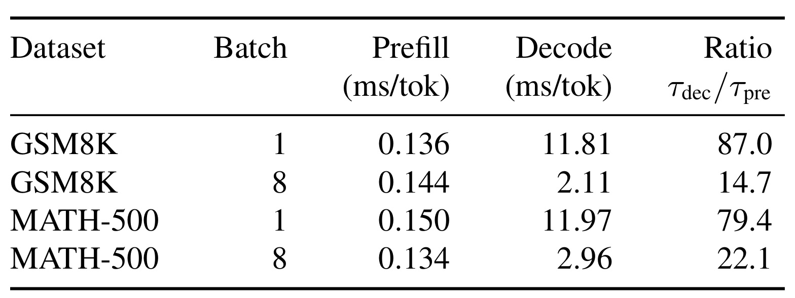
Table 6 给出 Context-Generation Substitution Law 最关键的系统证据。在 batch=1 时，GSM8K 的 prefill/decode 每 token 分别为 0.136/11.81 ms，比值 87.0；MATH-500 为 0.150/11.97 ms，比值 79.4。batch=8 后，decode 被并行请求摊薄，GSM8K 与 MATH 的比值降至 14.7 和 22.1，但仍显著大于 1。这说明用几十个 prefill token 交换一个 decode token 在该 H20/vLLM 设置下可能划算，也说明优势会随 batch、硬件、量化、cache 命中和 serving scheduler 改变。论文没有证明 14.7-87.0 是普适常数，部署前必须在目标服务栈重新测量 $\tau_{pre}$ 与 $\tau_{dec}$。
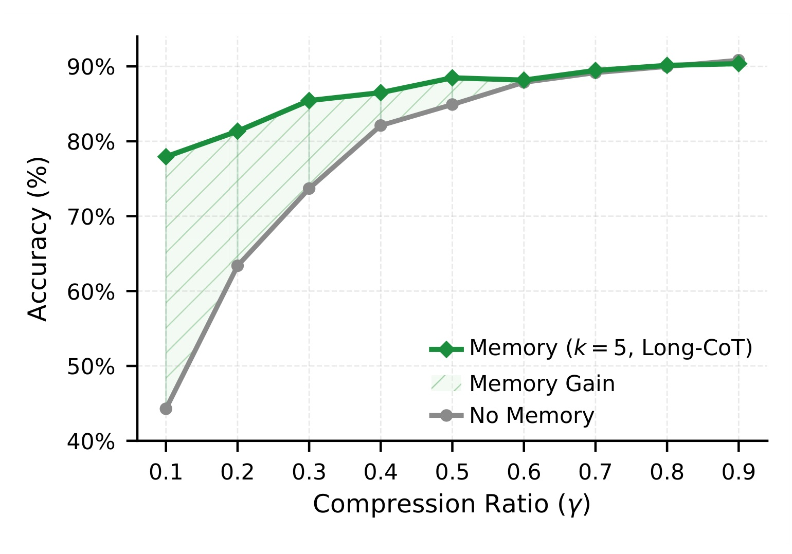
Figure 4 在 GSM8K、Qwen2.5-7B、$k=5$ Long-CoT memory 下扫描 TokenSkip 的 compression ratio $\gamma$。横轴越小表示压缩越激进；灰线在 $\gamma=0.1$ 附近约 44%，绿线接近 78%，阴影增益最大。随着 $\gamma$ 增至 0.5-0.9，no-memory baseline 自身恢复到约 88%-90%，memory 曲线仍略高但差距迅速缩小。这个形状比单一平均点更能支持“补偿”解释：如果 memory 只是稳定的额外知识，增益未必会与压缩损失同步；现在它主要在被删信息最多时填坑。附录 Figure 6 又表明 MATH 常在中等压缩取得最大收益，说明极端压缩可能让模型连使用 scaffold 的内部推理能力也一起丢掉。
完整端到端 latency 必须把在线 tag、embedding、search 和 prompt composition 加回：
符号解释：前三项是 query-side representation 与 retrieval，$T_{\mathrm{compose}}$ 是 memory 序列化和 prompt 组装，最后两项才是模型 prefill/decode。标准 CoT 没有外部 retrieval，因此其端到端时延等于模型时延；MAC 若只报告后两项会高估真实速度收益。
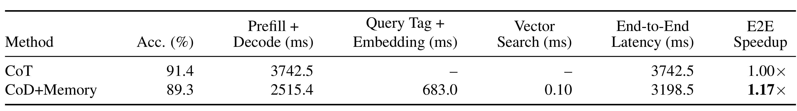
Table 12 用 GSM8K 实测修正主表口径。标准 CoT 的 prefill+decode 为 3742.5 ms；CoD+Memory 的模型部分为 2515.4 ms，对应 Table 1 的 1.49×。加入 query tag 与 embedding 的 683.0 ms、vector search 的 0.10 ms 后，端到端达到 3198.5 ms，真实 speedup 缩为 1.17×，准确率则是 89.3 对 91.4。向量 search 几乎不是瓶颈，tag/embedding 占了 retrieval 绝大多数成本。该结果仍显示优势，但只在 GSM8K、batch=1、指定硬件与实现上成立；短推理 query、不同 batch 或更快的标准 CoT 服务都可能进一步压缩这 17% 余量。
3.5 案例与失败边界
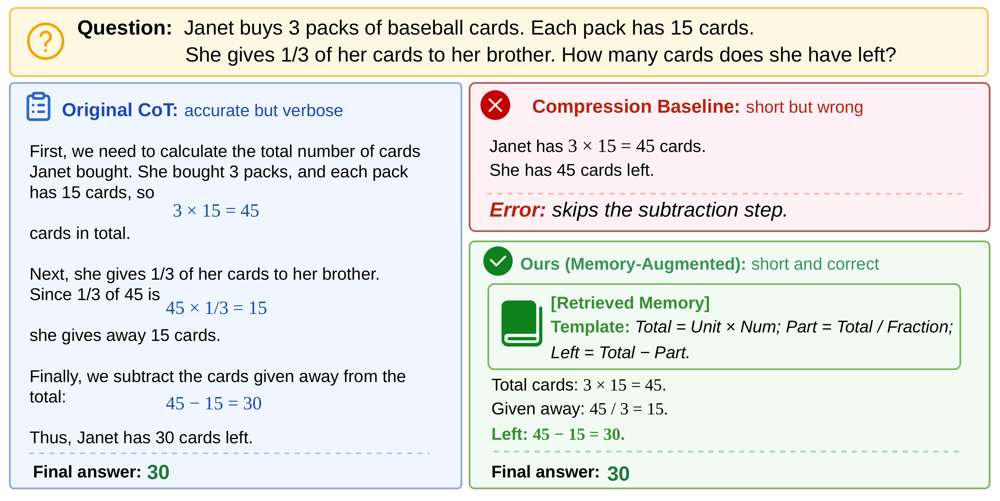
Figure 5 的题目要求先算三包卡片共 $3\times15=45$，再算送出三分之一即 15，最后求剩余 $45-15=30$。标准 CoT 完整执行三步但较长；压缩 baseline 只保留第一步，就直接写“剩 45”，错误不是算术失误，而是把 Total 误当 Left。retrieved memory 不包含这道题的答案，只给出抽象模板 Total=Unit×Num; Part=Total/Fraction; Left=Total-Part。MAC 生成的短链据此保留三个必要操作并得到 30。这个案例说明 Summary memory 的价值在于提醒“哪类状态转换不能删”，而非复制历史文本。然而它只是单个可视化样例，不能证明 tag retrieval 在分布外题目、含歧义约束或错误 memory 下同样可靠。
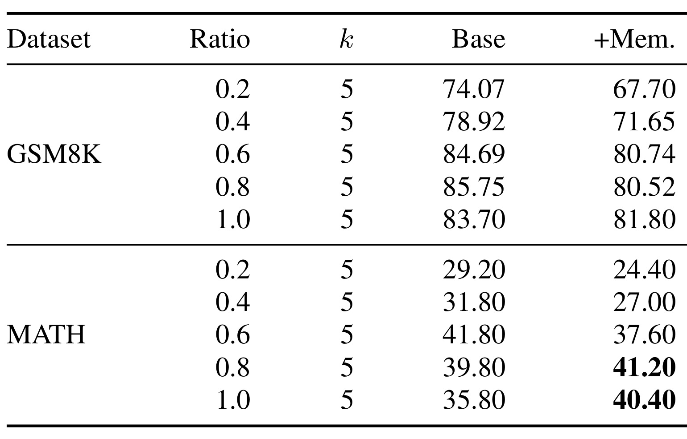
Table 11 阻止我们把“plugin compatible”理解成“普遍正收益”。在 GSM8K 上，Extra-CoT 的五个 ratio 加入 memory 后全部下降：例如 ratio=0.2 从 74.07 到 67.70，ratio=1.0 从 83.70 到 81.80。MATH 在 0.2/0.4/0.6 也下降，只有 0.8 与 1.0 从 39.80/35.80 提到 41.20/40.40。附录 Table 10 还显示 TokenSkip+LLaMA-3.1-8B 在 MATH 最激进 $\gamma=0.1$ 下从 18.00 降到 7.20，即 -10.80 点。原因可能是 memory 与压缩器的训练分布、轨迹格式或剩余内部能力不匹配。论文据此只能主张 MAC 与多类机制“可以组合且在若干 setting 有益”，不能主张无条件提升。
Qwen2.5-72B 在 MATH-500 上，CoD+Memory 为 78.20%，标准 CoT 为 77.00%，模型时延快 1.62×，但仍是单模型单数据点。temperature 分析中 memory 的 accuracy/decode range 为 0.50/0.90；作者明确 Across-T Std 不是 repeated-seed uncertainty。结合 AIME 仅 30 题、MMLU-Sci 仅 79 题，证据适合解释机制，不构成严格统计保证。
4. 总结
4.1 贡献判断与工程意义
这篇论文最有价值的地方不是再提出一种“更短 CoT”提示，而是把显式 context 与自回归 generation 放进同一成本模型：相关 reasoning memory 可以在 prefill 侧提供结构支撑，压缩器则减少 decode 侧工作记忆，两者共同优化准确率-时延前沿。 主结果证明 CoD 的严重掉点可以被大幅恢复，H20 测量解释了为何多输入 token 仍可能更快，端到端分解又如实显示 683 ms query processing 会把 1.49× 模型速度缩到 1.17×。这套证据链比只报告 output token reduction 更完整。
工程上，MAC 适合被看作“reasoning scaffold retrieval service”，而不是普通知识 RAG。bank 需要保存经过验证的解题结构，retriever 要按策略、约束和复杂度匹配，online policy 则根据 query 难度、相似度和 latency budget 决定是否启用、用哪种 memory format、取多少条。对推荐/搜索系统，可以把历史决策模板、约束满足步骤或重排策略压缩成显式 memory，帮助生成式 reranker/agent 少走串行步骤；但任何收益都要在目标 batch、cache、GPU 与在线分布上重新测量。
4.2 局限与后续跟进
局限至少有以下四点：
- 端到端收益余量有限且硬件相关。 GSM8K 在加入 query-side 开销后只剩 1.17×；短任务、更大 batch 或更快 decode kernel 可能让收益消失。
- memory 质量与检索错误是核心风险。 实验主要使用正确、完整、可解析的历史 trace；对噪声、过时、相互冲突或恶意 memory 的鲁棒性尚未充分评估。
- 并非所有压缩器和强度都受益。 Extra-CoT 多数组合退化，TokenSkip 在极端 MATH 设置出现 -10.80 点，说明 scaffold 与 compressor 存在耦合。
- 统计与复现证据有限。 AIME/MMLU-Sci 样本小，temperature 标准差不是重复 seed 置信度；API 内部 latency 不透明，且当前未核验到独立公开仓库。
下一步至少应做三项验证：
- 复现端到端成本曲线。 在 H20/A100/H100、batch 1/8/更高值上同时扫描 $k$、memory format 和压缩率，找出 $\tau_{pre}/\tau_{dec}$ 改变后的真实 break-even point。
- 做检索失败压力测试。 人为注入低相似、矛盾、错误或越权 memory，测量准确率、置信度与安全拒绝能力，并加入 similarity threshold 和 no-memory fallback。
- 做 compressor-memory 联合选择并复核开源。 用 query 难度预测器决定压缩器、$k$ 与 memory format；代码发布后核验 tag generator、时延边界和 Table 5 的 +9.17 口径，并补 repeated-seed 或 bootstrap 区间。
总体而言，MAC 给出了一条可信但有条件的路线：不是让 memory 代替推理，而是让相关 memory 提前承载可复用结构，使短推理链把稀缺的串行 decode 留给当前问题真正独有的部分。它是否值得上线，最终取决于检索相关性、query-side 开销、压缩器兼容性与目标硬件上的 break-even 测量，而不是单看输出 token 数。